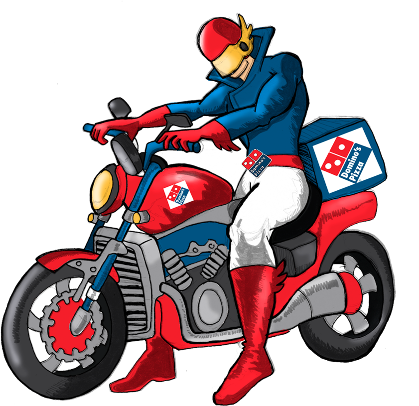

Professional Experience

Helpdesk |
|
Pizza is the prize and delivery is the game.That's the life of a pizza delivery driver. Checking orders for acuracy & for extras before heading out that door to navigate the mean city streets of your town. Remember, Pizza Delivery Drivers are your friends, they bring food! And before they leave, reward them with kindness in return by blessing them with a generous gratuity. They never forget an address or a customer.